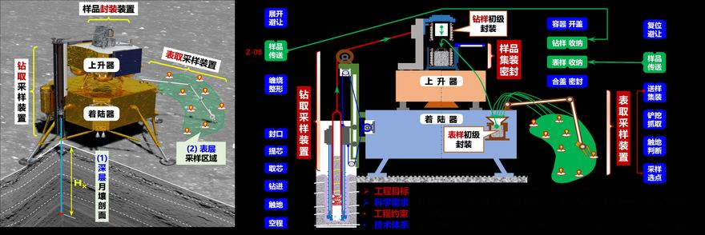

当前研究判断
待确认提案保护树体和胶乳品质，研究切割、清理与转场如何影响全流程有效产出。
建议下一步
先补充作业条件、预算和验收口径，再决定优先验证哪条路线。
- 研究任务
- 割胶机器人
- 候选路线
- 3 条
- 关键未知
- 3 项
以造物云 V2.3 为基准，为项目档案、方法研究和企业创新打造统一、精致、可核对的界面。
本地设计样板，无模型调用，不修改研究档案。
保护树体和胶乳品质，研究切割、清理与转场如何影响全流程有效产出。
先补充作业条件、预算和验收口径，再决定优先验证哪条路线。
沿用造物云冷灰、靛蓝和中文字重，以相同间距、边界与表面层级组织所有页面。
#F4F5F8#FFFFFF#5A4FE6#16181F读懂项目，也看清下一步
每一个研究判断都应保留来源、适用条件和未知。界面让证据更容易被看见，而不是让结论看起来更肯定。
按钮、表单、卡片和状态遵循同一套规则，用户不必在每个页面重新学习。

沿任务、系统设计与验证线索，理解嫦娥月球钻取采样系统的关键取舍。资料与 AI 解读分别呈现，未知不被隐藏。
方法卡说明用途和产物，不用装饰评分替代真实研究深度。
把原始想法整理为对象、目标、约束、要求和未知。
产物：ProblemBrief识别必要功能、作用流与接口，保留尚未证实的关系。
产物：FunctionModel组合子功能选项，同时记录相容、冲突与未知。
产物：ConceptSet路线没有无依据的排名。先比较条件和未知，再核对证据并留下反馈。
研究提案，非客户确认需求。当前选择只用于比较，不代表工程推荐。
下一步：先确认接触、排屑和清洁的边界，再讨论模块拆分。
骨架匹配最终内容结构，不使用假处理进度证明模型正在工作。